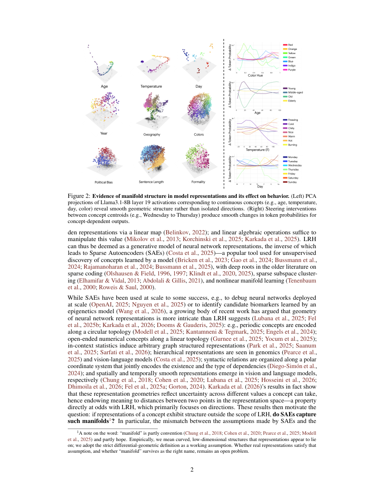

#1
★ 7/10
Do Sparse Autoencoders Capture Concept Manifolds?
稀疏自编码器能捕捉概念流形吗？

图 Figure · Page 2 of paper
🎯 稀疏自编码器以两种方式捕捉概念流形，但常因混合模式导致碎片化失效。
SAEs capture concept manifolds via two modes—global subspace or local tiling—but often fail by mixing them into a fragmented "dilution" regime.
| 维度 | 中文 | English |
|---|---|---|
| ❓ 待解决 的问题 |
稀疏自编码器（SAE）被广泛用于从神经网络中提取可解释特征，但其背后的假设是"一个概念对应一个线性方向"。然而现实中，许多概念（如颜色渐变、姿态变化）其实分布在弯曲的低维流形上，而非单一方向。目前尚不清楚SAE能否以及如何捕捉这种更丰富的几何结构。 | Sparse autoencoders (SAEs) are popular tools for extracting human-interpretable features from neural networks, but they assume concepts map to single linear directions. In reality, many concepts (e.g., color gradients, pose variations) lie on curved, low-dimensional manifolds rather than isolated directions. It is unclear whether and how SAEs capture this richer geometric structure. |
| 💡 解决 的亮点 |
- 提出了区分SAE捕捉流形的两种方式的理论框架：**全局模式**（一组原子的线性张成覆盖整个流形）和**局部模式**（各特征分别铺盖流形的局部小块）。 - 发现了第三种病态情形——**稀释（dilution）**，即全局与局部方案混合，导致流形结构碎片化，无法在单一特征层面被观察到。 - 提出应以**连贯原子组**（而非孤立方向）作为可解释性的基本单元，并倡导事后无监督发现方法。 | - Introduces a formal theoretical framework distinguishing two ways SAEs can capture manifolds: **global** (a compact group of atoms whose span covers the whole manifold) and **local** (features that tile small patches of the manifold). - Identifies a third, pathological regime called **dilution**, where global and local solutions are mixed, fragmenting the manifold structure and hiding it from individual feature inspection. - Proposes that post-hoc unsupervised discovery of **coherent atom groups**, rather than individual directions, is the right unit of interpretability for manifold-structured concepts. |
| 🧪 实验 内容 |
实验在两类数据上进行：一是具有已知真实流形结构的合成数据集（如圆形或低维参数流形），二是真实神经网络（包括视觉和语言模型）的激活值。评估了多种SAE架构（标准SAE、TopK SAE及其变体）。评估指标包括流形恢复质量、特征与真实几何的对齐程度，以及在不同训练配置和字典大小下的稀释程度。 | Experiments were conducted on both synthetic datasets with known ground-truth manifold structure (e.g., circular or low-dimensional parametric manifolds) and real neural network activations (including vision and language models). Multiple SAE architectures (standard SAEs, TopK SAEs, and variants) were evaluated. Metrics included manifold recovery quality, feature alignment with ground-truth geometry, and the degree of dilution across different training regimes and dictionary sizes. |
| 📊 实验 结果 |
SAE在各类架构上均表现出次优的流形恢复能力，稀释模式是最主要的失效方式。在受控合成实验中，SAE鲜少实现干净的全局或局部方案，混合（稀释）配置占据多数结果。定量上，当字典大小超过某一临界阈值后，流形恢复指标显著下降，说明更大的SAE并不自动带来更好的几何结构捕捉。相比之下，事后对原子进行分组恢复流形结构的效果，显著优于任何单一特征，验证了基于组的可解释性视角的有效性。 | SAEs consistently exhibited suboptimal manifold recovery across architectures, with the dilution regime being the dominant failure mode. In controlled synthetic experiments, SAEs rarely achieved clean global or local solutions; instead, mixed (diluted) configurations accounted for the majority of outcomes. Quantitatively, manifold recovery metrics dropped significantly when dictionary sizes grew beyond a critical threshold, indicating that larger SAEs do not automatically yield better geometric structure capture. Post-hoc grouping of atoms recovered manifold structure substantially better than any individual feature, demonstrating the utility of the proposed group-based interpretability lens. |
| 🏁 结论 | 本文证明了SAE可以通过全局子空间和局部铺盖两种方式捕捉概念流形，但实践中主要陷入掩盖流形结构的"稀释"模式。核心贡献在于提出了一套理论与实证框架，表明神经网络可解释性的基本单元应是几何对象（特征组），而非孤立方向。 | This paper proves that SAEs can capture concept manifolds in two fundamentally different ways—global subspace allocation and local tiling—but in practice predominantly fall into a fragmented "dilution" regime that obscures manifold structure. The key contribution is a theoretical and empirical framework showing that geometric objects (groups of features), not individual directions, should be the basic units of neural network interpretability. |
| 🔗 论文 链接 |
arXiv: 2604.28119v1 · 📥 PDF | |
⚙️ Method · 方法详解
作者构建了一套理论框架，将概念流形建模为嵌入在神经网络激活空间中的低维几何对象。他们通过线性代数与几何论证，刻画出SAE的三种行为模式：全局子空间捕捉、局部铺盖和稀释。在实验上，他们在受控合成流形和真实神经网络表征上探测已训练的SAE，衡量特征与已知流形几何的对齐程度。最后，他们提出应通过搜索能集体重建流形结构的连贯原子组来评估SAE，而非依赖单个特征的质量。
The authors develop a theoretical framework that models concept manifolds as low-dimensional geometric objects embedded in neural network activation spaces. They characterize three regimes of SAE behavior—global subspace capture, local tiling, and dilution—using linear algebraic and geometric arguments. Empirically, they probe trained SAEs on controlled synthetic manifolds and real neural network representations to measure how well features align with known manifold geometry. They then propose evaluating SAEs not by individual feature quality but by searching for coherent groups of atoms that collectively reconstruct manifold structure.
📐 Key Formulas · 关键公式
\[\mathcal{M} \subset \mathbb{R}^d, \quad \dim(\mathcal{M}) = k \ll d\]
💡 概念流形 M 是嵌入在高维激活空间中的低维几何结构，其本征维度 k 远小于环境维度 d。
A concept manifold M is a low-dimensional geometric structure embedded in the high-dimensional activation space, with intrinsic dimension k much smaller than the ambient dimension d.
\[\hat{x} = \sum_{i \in S} c_i \mathbf{a}_i, \quad |S| \ll N\]
💡 SAE 用字典中少量被激活的原子 a_i 的稀疏线性组合来重建输入 x，其中 S 是激活原子的索引集，N 是字典总大小。
The SAE reconstructs input x as a sparse linear combination of a small subset S of dictionary atoms a_i, where N is the total dictionary size.
🌟 Why It Matters · 为什么重要
随着SAE成为大型语言和视觉模型机械可解释性的主流工具，理解其几何失效模式对于确保输出的可信性与意义至关重要。本研究为下一代可解释性方法提供了原则性路线图，推动该领域从单特征分析迈向群组级别的几何推理。
As SAEs become the dominant tool for mechanistic interpretability of large language and vision models, understanding their geometric failure modes is critical for ensuring their outputs are trustworthy and meaningful. This work provides a principled roadmap for next-generation interpretability methods that move beyond single-feature analysis to group-level geometric reasoning.